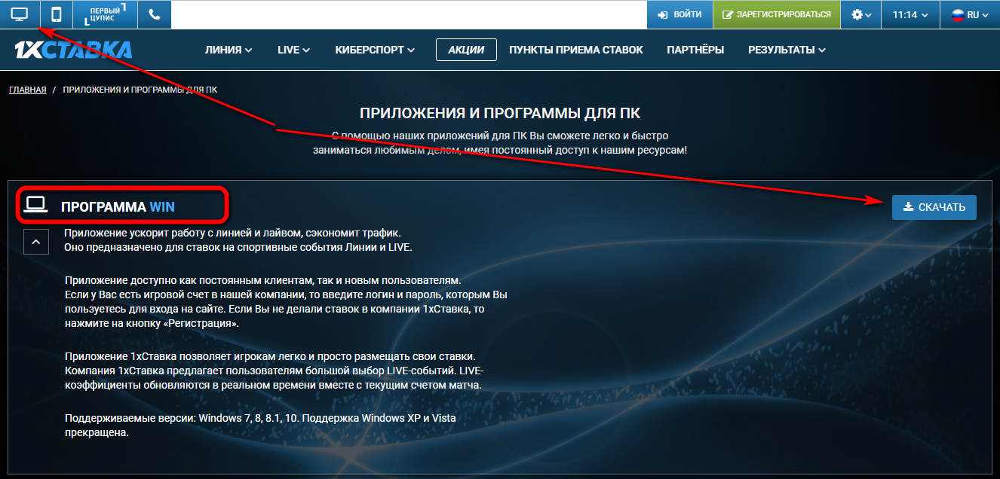
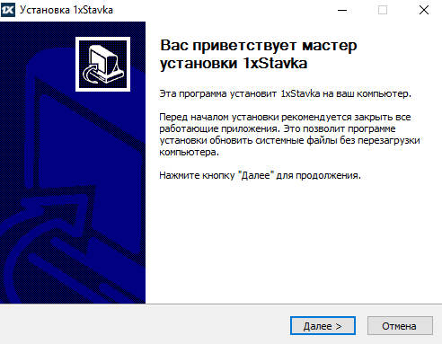
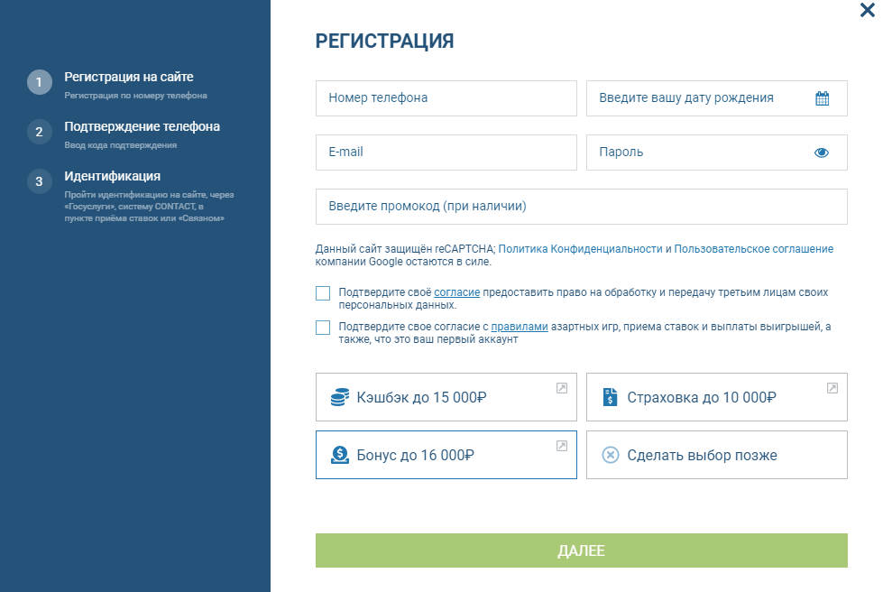
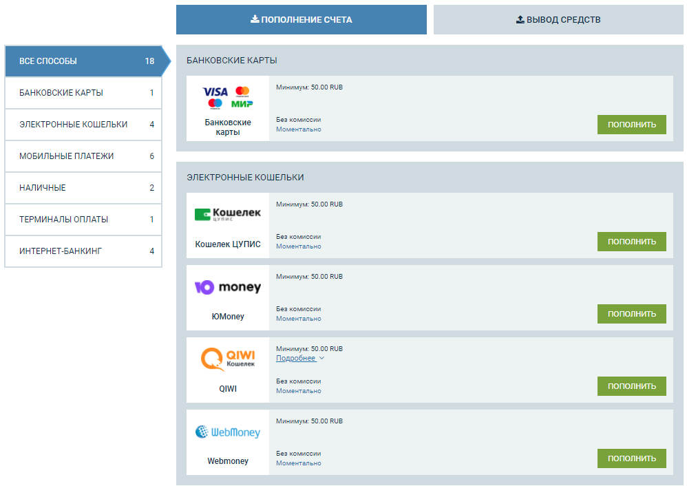
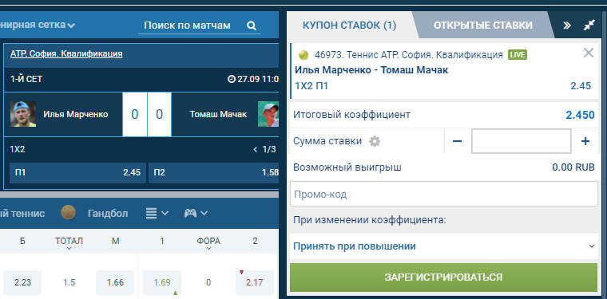
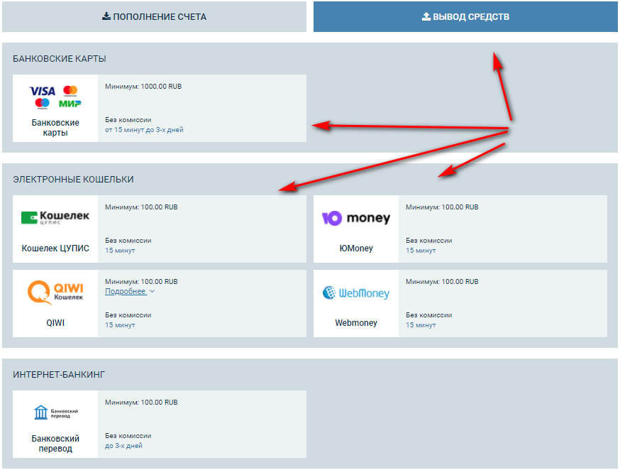
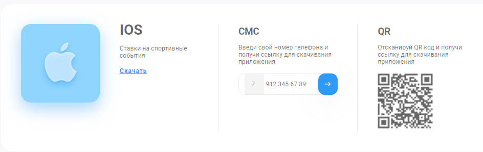
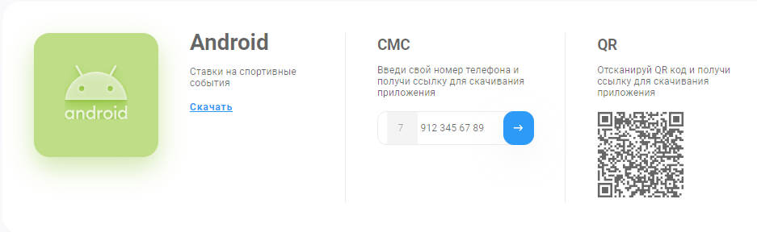
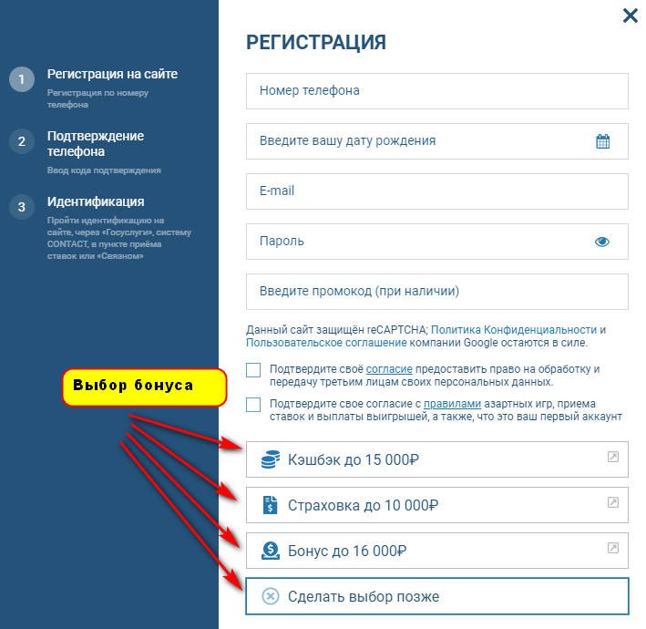

Букмекерская контора 1xBet уже давно получила статус титана в беттинговой деятельности. Заключать пари через эту платформу всегда удобно и безопасно, а количество и разнообразие доступных событий поражает даже самых скептических пользователей. Долгое время 1xBet считается абсолютным чемпионом на постсоветском пространстве по аудитории активных игроков и размерам выигрышей. А число людей, желающих скачать 1xBet официальный сайт на свой девайс, постоянно растет, и эта тенденция не перестает быть актуальной.
Приложение 1xBet для Windows
Ключевым достоинством 1xBet на фоне многих других букмекерских площадок, является наличие собственного, постоянно работающего и полноценного приложения для мобильных устройств (смартфонов, планшетных компьютеров). Далеко не каждый букмекер может похвастаться такой возможностью, а лишь предложить альтернативу в виде упрощенной версии для мобильных браузеров с урезанным функционалом и не совсем удобным интерфейсом (особенно если использовать сайт на смартфонах с небольшой диагональю дисплея).
Сегодня скачать приложение 1xBet сможет даже тот человек, который никогда раньше не имел дела с этой букмекерской конторой. Разработчики программного обеспечения максимально упростили этот процесс, позволив загружать официальный клиент сайта БК с магазина приложений, либо непосредственно специального раздела в рамках платформы.
1xWin
Каждый желающий может скачать на компьютер 1xBet 1xWin – официальный софт букмекерской конторы для операционной системы Windows. Данный клиент упрощает взаимодействие с площадкой без ограничений и блокировок. Файл установки с расширением «exe» можно найти в соответствующем разделе на сайте БК. После запуска инсталлятора начнется автоматическая установка и запуск приложения. Дальше вы сможете работать со своим личным кабинетом, делать ставки, участвовать в акциях, розыгрышах и лотереях без каких-либо сложностей.
Технические характеристики приложения 1xWin:
- Интерфейс – русскоязычный.
- Размер после инсталляции 19,5 Мб.
- Версия – 2.1.14.0.
- Совместимость – Windows (XP, Vista, 7, 8, 10), Linux.
Скачивание и установка
Чтобы скачать 1xbet приложение в России, необходимо придерживаться такой последовательности действий:
- Зайти на главную страницу сайта букмекерской конторы.
- В верхнем углу слева найти иконку в виде монитора, которая указывает на приложение для ПК.
- Внимательно прочитать информацию от разработчиков в открывшемся окошке.
- Выбрать подходящую версию программного обеспечения и подтвердить начало скачивания.
Важно! Скачать ПО букмекерской конторы 1xBet нужно только с официального сайта, либо магазина приложений AppStore (если нужен софт для айфона). Искать файлы установки на сторонних ресурсах небезопасно.
Чтобы процесс установки был завершен успешно, нужно провести простые манипуляции:
- Дважды нажать на файл установки.
- Кликнуть на клавишу «запустить».
- После разворачивания окна мастера установки нажать на «Далее».
- Указать размещение папки, где находятся программные файлы.
- Дождаться завершения инсталляции (этот процесс длится до нескольких минут, но обычно занимает пару секунд. Все зависит от мощностей вашего ПК).
- Нажать на «Готово».
Пиктограмма установленного приложения появится на рабочем столе компьютера, и вы сможете открывать клиент 1xBet в любое удобное время.
Как использовать
Чтобы полноценно пользоваться софтом от букмекерской конторы 1xBet, нужно зарегистрировать профиль, либо войти в имеющийся кабинет, а затем пополнить игровой счет. Во втором случае достаточно ввести данные авторизации в пустые поля и не регистрироваться повторно. Кроме того, в правилах платформы указано, что с одного компьютера и одного IP-адреса может зарегистрироваться только один человек. Любые попытки создания нескольких профилей будут рассмотрены службой безопасности БК как мошенничество, поэтому вскоре заблокируются.
Регистрация
Если вы никогда раньше не имели дела с БК 1xBet, приготовьтесь пройти процедуру регистрации. Она несложная и занимает несколько минут. Для создания профиля достаточно выбрать один из доступных способов и следовать инструкциям системного интерфейса.
- В 1 клик.
- С помощью мобильного телефона.
- По адресу электронной почты.
- Через мессенджер или профили социальных сетей.
Каждый способ предоставляет доступ к функциям программного обеспечения и сайту БК.
С учетом выбранного варианта объем предоставленных данных и метод их генерации различаются. Если выбран первый вариант (в 1 клик), необходимо указать валюту, с которой вам будет удобно работать, и страну проживания. Во втором случае при регистрации через мобильный нужно дополнительно указать номер телефона и заполнить поле промокода (если он имеется).
В случае регистрации по e-mail необходимо ввести все отсутствующие сведения, придумать логин и пароль. Во время верификации у вас не будет необходимости повторно вносить эту информацию, а для входа в личный кабинет через приложение потребуется лишь указать сгенерированные данные.
Как видите, скачать 1xBet на ПК очень просто и быстро.
Пополнение
Для создания ставок клиентам букмекерской конторы 1xBet нужно внести определенную сумму денег на баланс. Минимальная сумма пари составляет 10 рублей. Компания предлагает разные способы пополнения, которые доступны в личном кабинете и соответствующем разделе. В их числе:
- Банковские карты в платежных системах Visa и MasterCard.
- Терминалы оплаты.
- Электронные денежные кошельки, услуги интернет-банкинга.
Минимальная сумма взноса составляет 30 рублей. После выбора оптимального инструмента, нужно нажать по нему и придерживаться инструкций системного интерфейса до завершения операции. Букмекерская контора не берет комиссии за пополнение или кэшаут.
Первые ставки
Скачав 1xBet (kz, ru, ua или версию для других стран), можно начинать заключать первые пари. Интерфейс приложения для ПК полностью повторяет структуру официального сайта для браузера, что не может не радовать.
Спортивные события и топовые мероприятия отображаются на главной странице. Для более глубокого поиска доступных матчей доступен фильтр по категориям в боковом меню. Оформление разделов линии и лайва полностью идентично сайту. После выбора рынка и исхода нужно кликнуть на коэффициент и добавить ставку в купон.
Вывод заработанного
Существует 28 способов вывода средств. Для оформления заказа на кэшаут можно использовать личный кабинет. Необходимо указать подходящий вариант, например, банковскую карту, электронный платежный кошелек, наличные средства и т.д., а затем следовать инструкциям системного интерфейса. Минимальная сумма для снятия средств составляет 100 рублей. Также важно учитывать, что можно использовать только один метод пополнения и вывода денег. В противном случае система безопасности может заподозрить вас в мошеннических действиях.
Основные преимущества приложения
У программного обеспечения 1xBet для ПК есть большое количество преимуществ:
- Интуитивно-простой и функциональный интерфейс, который понятен каждому игроку.
- Существенная экономия времени и трафика, поскольку пари можно заключать даже при невысокой скорости интернета.
- Встроенный обход блокировок Роскомнадзора и прочих служб.
- Доступ к полному функционалу букмекерской конторы.
- Возможность регистрации или авторизации в личном кабинете без захода на сайт.
- Отсутствие ограничений на создание ставок.
- Множество вариантов пополнения и вывода средств.
- Анализ истории предыдущих событий и ставок, результатов и статистики состязаний.
- Качественная служба поддержки.
- Возможность настройки напоминаний, чтобы не упустить важный матч.
Чтобы быстро делать ставки, можно воспользоваться разделом Лайв. Коэффициенты обновляются в режиме реального времени, исходя из текущего состояния события.
1xBrowser
Фирменный браузер от букмекерской конторы выделяется простым и удобным интерфейсом. В нем отсутствует назойливая реклама и скрытые функции. Для доступа к серверам сайта не нужно использовать зеркала или прочие методы обхода блокировок. Среди других достоинств браузера 1xBrowser:
- Простой интерфейс.
- Гарантированный доступ к личному кабинету и ставкам.
- Экономное расходование трафика и ОЗУ компьютера.
1xAccess
Вы можете качать 1xBet undefined на свой ПК, чтобы в любой удобный момент иметь альтернативный адрес для рабочих зеркал. Приложение совместимо с Windows 7, 8, 10, XP, Vista.
Скачать 1xBet на iOS
Разработчики программного обеспечения для букмекерской конторы 1xBet позаботились и о владельцах iPhone. Поэтому теперь есть возможность скачать 1xBet на iOS и получить обширные возможности по заключению пари. Теперь вы можете делать ставки с любого удобного места и не тратить время на открытие сайта. Также приложение намного быстрее, чем версия для мобильного браузера.
Особенности приложения для Айфона
Перед тем как скачать 1xBet на айфон, нужно ознакомиться с некоторыми особенностями этого приложения:
- На территории Российской Федерации сайт букмекерской конторы блокируется государственными службами, поэтому пользоваться им без обхода ограничений невозможно. В случае с приложением любые блокировки снимаются, поскольку в нем используются встроенные прокси-сервера.
- С помощью клиента для смартфона вы получаете доступ как к классическим, так и к нестандартным ставкам из эксклюзивных дисциплин.
- Есть возможность скачать 1xBet casino и работать с онлайн-казино, слотами или тотализатором.
- Приложение позволяет заключать пари как в Прематче, так и в разделе Лайв.
- В мобильном клиенте есть доступ к видеотрансляциям спортивных событий.
Как скачать мобильный клиент
Особые сложности по загрузке 1xBet на айфон отсутствуют. Достаточно открыть магазин приложений AppStore и ввести в строку для поиска нужную фразу, после чего загрузить файл установки. Также можно найти ссылку на софт на официальном сайте букмекерской конторы (если есть возможность обойти ограничения).
Преимущества мобильного приложения 1xBet
Функции приложения для iOS достаточно обширны, а системный интерфейс максимально упрощен и интуитивно-понятен. Приложение не тормозит, работает быстро и бесперебойно, а данные загружаются без малейших сложностей. Главные преимущества клиента:
- Быстрый и продуманный интерфейс.
- Множество функций и возможностей.
- Доступ к потоковому видео.
- Экономное расходование веб-трафика.
- Приятный дизайн.
Где скачать 1xBet на Андроид
Скачать 1xBet на Андроид бесплатно можно через официальный сайт. На нем представлена последняя актуальная версия, которая полностью повторяет интерфейс основного сайта, а не мобильной адаптации.
Загрузка начинается после клика по прямой ссылке в виде иконки Download. Чтобы скачать 1xBet apk нужно потратить не больше нескольких минут. После этого вы получите доступ к продвинутому и удобному клиенту с русскоязычным интерфесом.
Установка 1xBet на Андроид
Процесс инсталляции софта от 1xBet максимально упрощен. После нажатия на apk-файл будет запущена автоматическая установка. Если вы раньше не устанавливали ПО из сторонних источников, в целях безопасности система может запросить разрешение и оповестить о потенциальной угрозе. При этом поводы для беспокойства отсутствуют, поскольку приложение полностью безопасное и проверенное множеством антивирусных сканеров на серверах.
Нужно подтвердить свое согласие на установку и дождаться завершения процедуры. После этого необходимо авторизоваться в личном кабинете, либо создать новый профиль с нуля.
Регистрация в 1xBet
Скачав БК 1xbet на Андроид, можно переходить к процедуре регистрации. Она занимает несколько минут и выглядит достаточно просто. После входа в приложение будет отображен главный экран. Дальше следует открыть меню (в левом верхнем углу с иконкой трех полосок) и нажать на пункт «регистрация»).
В один клик
Метод моментальной регистрации подойдет как для новичков, так и для более опытных беттеров, которые еще не пользовались услугами 1xBet и хотят ознакомиться с интерфейсом и возможностями платформы.
В данном случае нужно указать свою страну, тип валюты и бонусный промокод (если он имеется). Дальше следует ознакомиться с правилами площадки и подтвердить свое согласие с ними. После этого система отобразит новый логин и пароль для авторизации. В способе регистрации в 1 клик не нужно верифицировать свою личность и вносить документы через ЦУПИС.
По телефону
Действия при регистрации по телефону практически идентичны, за исключением необходимости вводить мобильный телефон.
Полная
Если потратить чуть больше времени, чем в двух предыдущих случаях, можно получить доступ ко всем функциям букмекерской конторы без ограничений на пополнение или снятие денег с игрового счета. При полной регистрации необходимо указывать данные ФИО, адрес, дату рождения, электронную почту, логин и пароль.
Сам процесс создания учетной записи достаточно простой. При этом он существенно повышает безопасность ваших конфиденциальных данных и оберегает профиль от взлома./p>
Через социальные сети
Авторизация через социальные сети подразумевает выбор подходящего аккаунта, страны и валюты. Однако этот способ может привести к подтягиванию некорректных данных с последующими проблемами при верификации профиля или выводе средств. В настоящее время можно авторизоваться в 1xBet через Google, Мой мир, Telegram, Яндекс и Одноклассники.
Вход в приложение и активация игрового аккаунта
После успешной регистрации нужно перейти в раздел меню авторизации, ввести логин и пароль, а также нажать на клавишу войти. Чтобы активировать аккаунт, следует подтвердить данные, которые были введены при регистрации, электронный почтовый адрес и телефон. На указанный номер придет сообщение с кодовой комбинацией, которая потребуется для подтверждения регистрации.
Безопасность
После успешной регистрации и входа в приложение необходимо настроить все аспекты личной и финансовой безопасности. И важно активировать защиту до первого денежного взноса, не откладывая на потом. В противном случае вы можете обнаружить, что средства с вашего счета будут сняты мошенниками.
Чтобы усилить безопасность, нужно зайти в настройки личного профиля и в раздел «Настройки безопасности». Дальше следует провести такие манипуляции:
- Привязать смартфон, если это не было сделано при регистрации.
- Придумать секретный вопрос.
- Запретить авторизацию по электронной почте./li>
- Подключить 2-факторную аутентификацию, используя сторонний софт, например, Google Authenticator.
FAQ по безопасности
Что представляет собой 2-факторная аутентификация?:
Это метод защитить свой профиль от доступа третьих лиц. Способ заключается в том, что при входе в кабинет система запрашивает подтверждение двумя способами. В первую очередь вводится логин и пароль, а затем уникальный код из приложения Google Authenticator.
Что делать в случае потери логина и пароля от учетной записи?:
Нужно выполнить процедуру восстановления профиля. Если в процессе возникнут проблемы, необходимо связаться со службой технической поддержки и сообщить о том, что логин или пароль были забыты.
Прокси
Если вы решили скачать 1xBet apk, обязательно ознакомьтесь с функционалом и возможностями этого мощного ПО. В некоторых случаях для работы с букмекером нужно указывать прокси. Это необходимо в ряде стран, где доступ к серверам ограничен. Процесс подключения прокси максимально простой.
Достаточно зайти в настройки приложения, кликнув на пиктограмму шестеренки, а затем на вкладку «Настройки HTTP-прокси» и ввести параметры своего провайдера.
Функционал мобильного приложения 1хБет
Эксперты отмечают, что мобильное приложение 1xBet обладает самым продуманным и удобным интерфейсом из всех приложений букмекерских контор. В распоряжении игроков все виды купонов, онлайн-трансляции, казино, слоты и множество других полезных возможностей.
Акции, бонусы, кешбэк и промокоды
Следует регулярно открывать этот раздел, поскольку в нем публикуются интересные предложения от партнерских компаний и эксклюзивные акции для новичков и постоянных пользователей.
Раздел инфо и правила в 1хБет
После инсталляции приложения необходимо изучить раздел инфо и пользовательского соглашения. Это позволит избежать спорных ситуаций и проблем при дальнейшей работе с БК.
Пополнение счета и вывод средств
После верификации учетной записи необходимо пополнить свой счет. Это можно сделать такими путями:
- Через банковские карты.
- С помощью наличных средств.
- Через электронные платежные системы и предоплаченные карты.
- С помощью электронных ваучеров.
Обновление приложения
Вы можете скачать 1xBet на телефон в разных версиях. Кроме того, приложение регулярно обновляется, поэтому его интерфейс и возможности улучшаются.
Чтобы иметь под рукой актуальную версию ПО, нужно регулярно следить за обновлениями сайта, либо заходить в настройки приложения. Информация о выходе новых версий добавляется мгновенно.
Старая версия приложения
Если по каким-либо причинам вам не нравится новая версия, либо она не работает, можно скачать старую версию 1xBet и работать с букмекерской конторой без ограничений.
Служба технической поддержки
При возникновении проблем и сложностей в работе приложения для ПК или смартфона, необходимо незамедлительно связаться с представителями службы поддержки и сообщить о сложившейся ситуации. Сотрудники быстро рассмотрят ваш вопрос и окажут квалифицированную помощь.